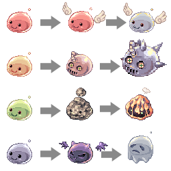

Pori-pori - is a classic 3-in-row game
Your reward is Zeny!
Цель игры набрать наибольшее количество очков - Zeny до того как на поле не останется ни одной свободной клетки.
Чтобы очищать клетки нужно собирать группы из 3х или более порингов (клетки должны соприкасаться по сторонам).
В отдельной клетке располагается поринг который следующим попадет на доску при нажатии на клетку.
Чтобы собрать группу нужно нажимать пустую клетку рядом с таким же порингом.
Группа порингов с наградой в 5z превращаются в одного 15z, а те в свою очередь в поринга в 45z.
Превращение происходит в той клеке куда попал завершающий группу поринг.
Группа порингов с наградой 45z полностью исчезает с доски.
ТАБЛИЦА ПРЕВРАЩЕНИЙ
